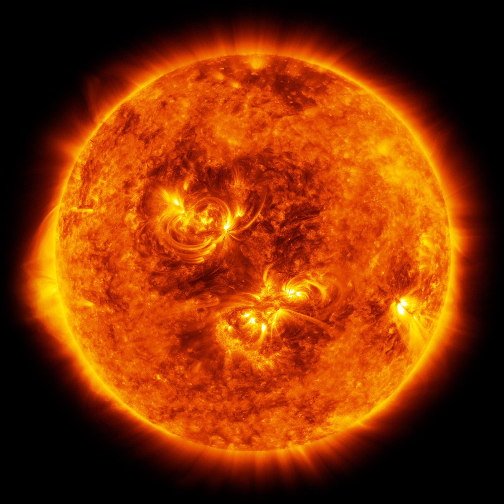

SUN
The Sun is the star at the center of the Solar System. It is a nearly perfect sphere of hot plasma, with internal convective motion that generates a magnetic field via a dynamo process. It is by far the most important source of energy for life on Earth.
